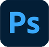

Graphic designs

サマーセール バナー
ペンツールで各素材描画。価格層は中堅のアパレル。ブランドイメージを崩さない、セールバナーをテーマに制作。
セブ島留学 バナー
留学エージェントの広告。背景と手前の女性は別の画像。語学以外の留学の魅力をテーマに制作。「綺麗な夕日を海に見にいく」くらい手軽という意味も込められている。

阿寒湖水綾亭（架空）バナー
週末に、贅沢をし日常の心に余裕を持つをテーマにキャッチコピーとして、「＃（ハッシュタグ）週末貴族」を設定。SNSからの集客にも期待。バナー広告＝クリックしてもらう事。そのため右下に「詳しくはこちら」のボタンを配置。Photoshopで彩度を上げ、認識しやすい色に。
Adobe PhotoShop バナー
ソフトへの感動をテーマに制作。フォトショップでレタッチをし、そばかすを消した女性のビフォーアフターを載せた。黄色と青色で構成されたカラーは補色の関係にある。